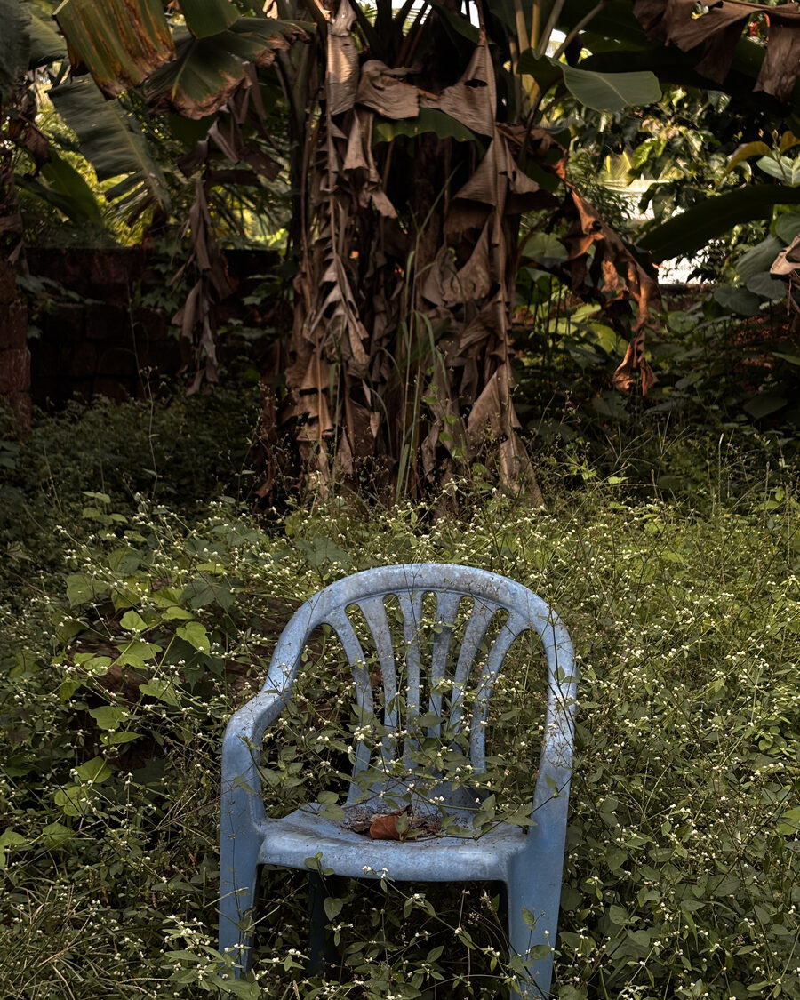
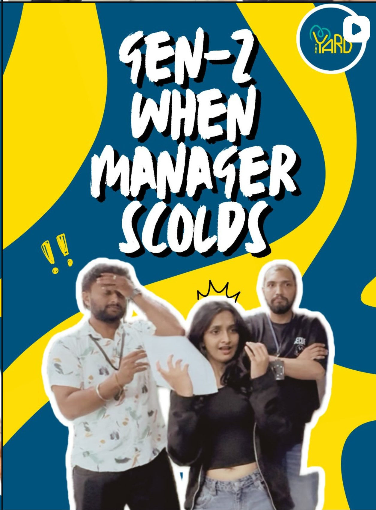
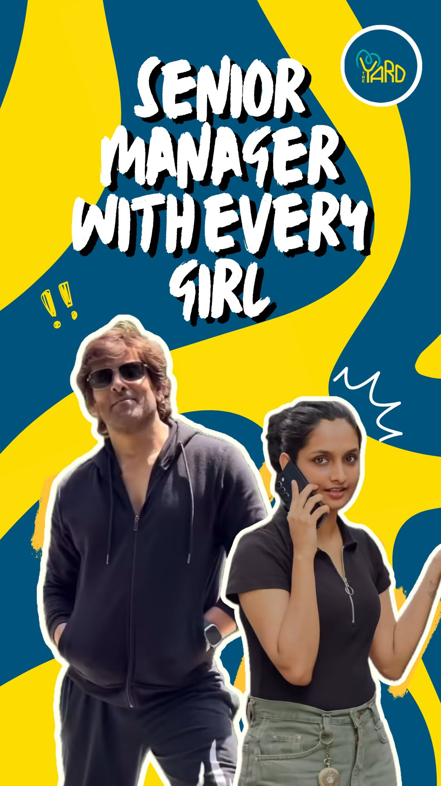
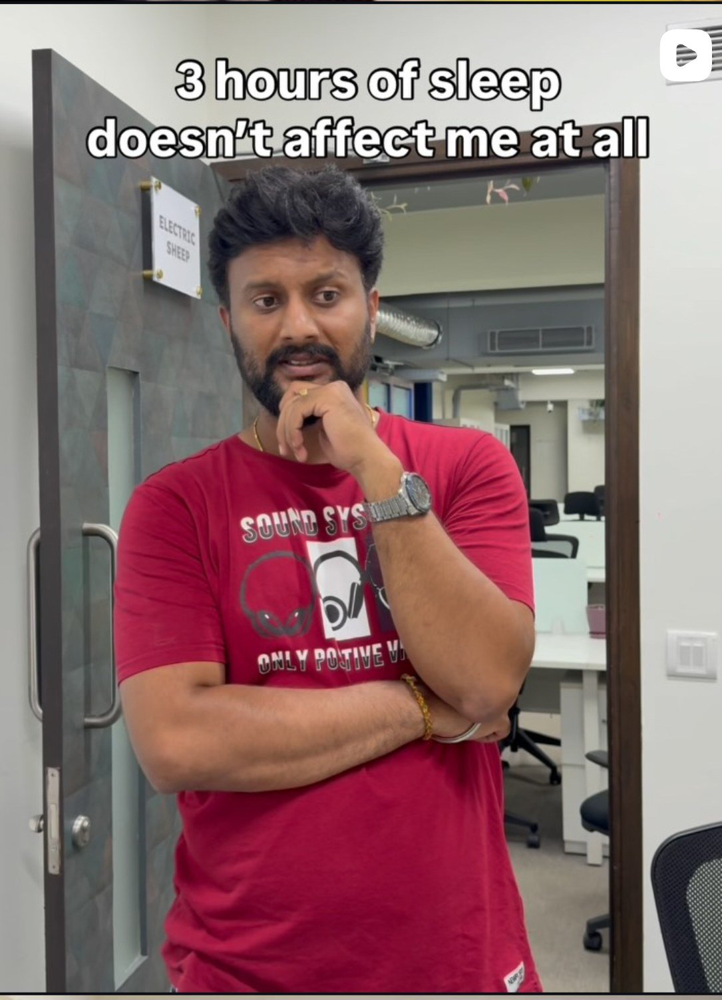
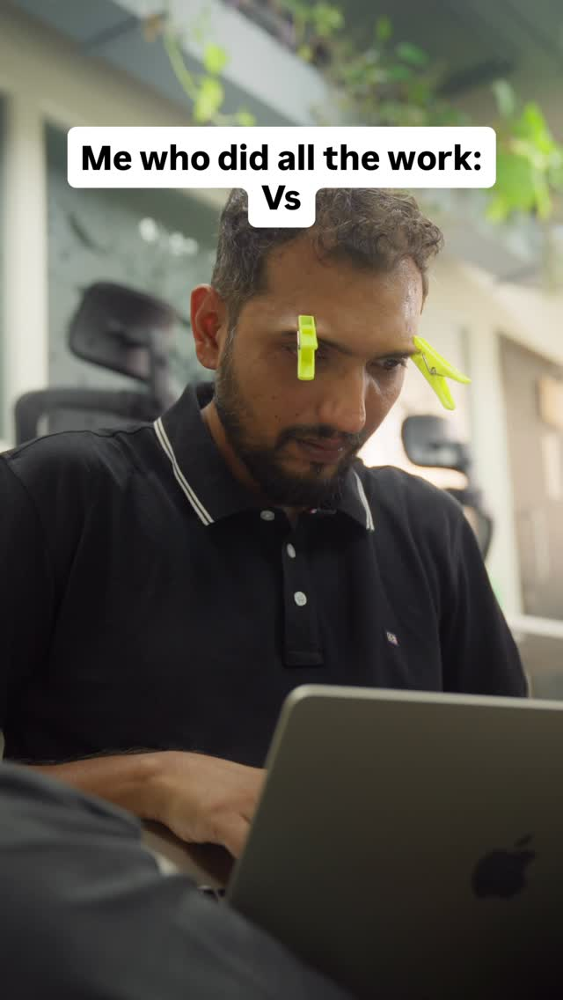
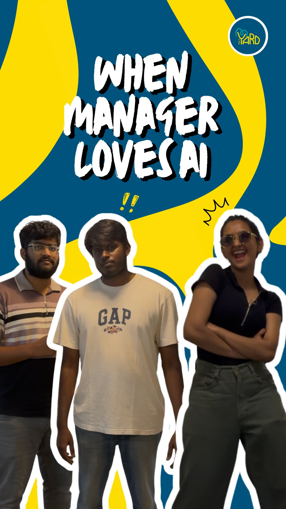
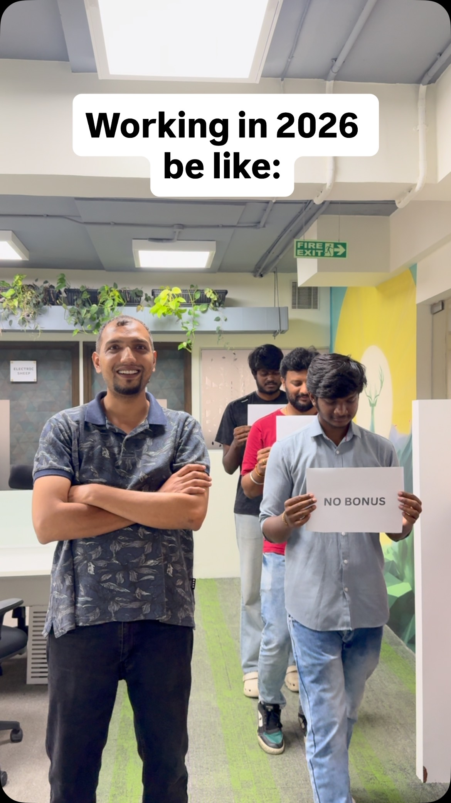
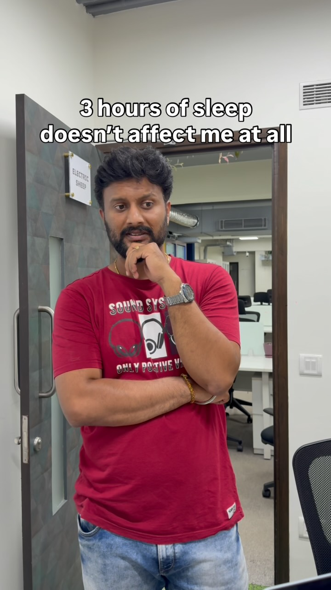

01Win
The Yard, Bangalore
Two comedy IPs, one cohort-targeting method
684,535+ views and 97.7% non-follower reach, on an account that started at roughly 600 followers.

One frame that didn't make the reel"The enemy of art is the absence of limitations."— Orson Welles







I didn't set out to work in content — economics and public-policy research shaped me first. What pulled me in is a plainer thing: I like finding the one detail in a story that makes a stranger stop scrolling, and then figuring out exactly how to tell it.
My background isn't in content or filmmaking, and I've stopped treating that as a gap — it's the actual advantage. Two years of field research, public-policy columns, and economics at university taught me how to walk into a subject I know nothing about and get fluent in it fast.